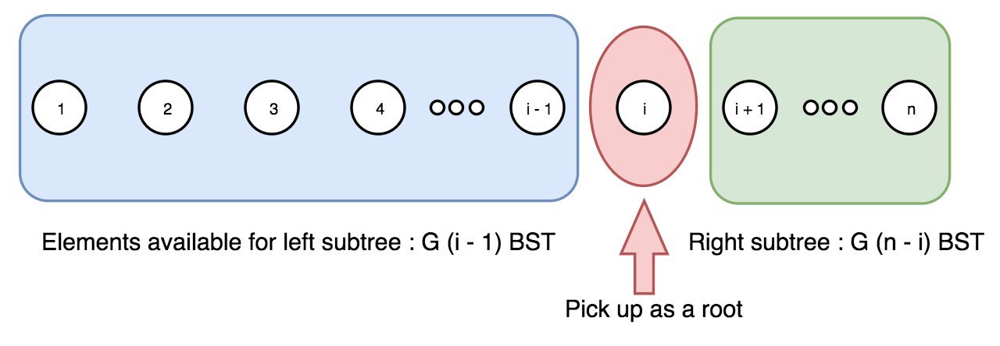

Given n, how many structurally unique BST’s (binary search trees) that store values 1 … n?
Example:
Input: 3
Output: 5
Explanation:
Given n = 3, there are a total of 5 unique BST's:
1 3 3 2 1
\ / / / \ \
3 2 1 1 3 2
/ / \ \
2 1 2 3给定一个有序序列 1 … n，为了根据序列构建一棵二叉搜索树。我们可以遍历每个数字 i，将该数字作为树根，1 … (i-1) 序列将成为左子树，(i+1) … n 序列将成为右子树。于是，我们可以递归地从子序列构建子树。
在上述方法中，由于根各自不同，每棵二叉树都保证是独特的。
可见，问题可以分解成规模较小的子问题。因此，我们可以存储并复用子问题的解，而不是递归的（也重复的）解决这些子问题，这就是动态规划法。
给定序列 1 … n，我们选出数字 i 作为根，则对于根 i 的不同二叉搜索树数量 \(F(i, n)\)，是左右子树个数的笛卡尔积，如下图所示:

没想到这里还埋了一个数学知识：Catalan number：
\$C_{0}=1 \quad \text { and } \quad C_{n+1}=\sum_{i=0}^{n} C_{i} C_{n-i} \quad \text { for } n \geq 0\$
\$C_{0}=1, \quad C_{n+1}=\frac{2(2 n+1)}{n+2} C_{n}\$
\$C_{0}=1, \quad C_{n+1}=\frac{2(2 n+1)}{n+2} C_{n}\$
附加题：参考资料显示，关于 Catalan number 有好多好玩的东西可以把玩。查资料把玩把玩。
参考资料
Given n, how many structurally unique BST’s (binary search trees) that store values 1 … n?
Example:
Input: 3
Output: 5
*Explanation:
*Given n = 3, there are a total of 5 unique BST's:
1 3 3 2 1
\ / / / \ \
3 2 1 1 3 2
/ / \ \
2 1 2 3
1
2
3
4
5
6
7
8
9
10
11
12
13
14
15
16
17
18
19
20
21
22
23
24
25
26
27
28
29
30
31
32
33
34
35
36
37
38
39
40
41
42
43
44
45
46
47
48
49
50
package com.diguage.algorithm.leetcode;
/**
* = 96. Unique Binary Search Trees
*
* https://leetcode.com/problems/unique-binary-search-trees/[Unique Binary Search Trees - LeetCode]
*
* @author D瓜哥, https://www.diguage.com/
* @since 2020-01-27 22:14
*/
public class _0096_UniqueBinarySearchTrees {
/**
* Runtime: 0 ms, faster than 100.00% of Java online submissions for Unique Binary Search Trees.
* Memory Usage: 38.2 MB, less than 5.55% of Java online submissions for Unique Binary Search Trees.
*
* Copy from: https://leetcode-cn.com/problems/unique-binary-search-trees/solution/bu-tong-de-er-cha-sou-suo-shu-by-leetcode/[不同的二叉搜索树 - 不同的二叉搜索树 - 力扣（LeetCode）]
*/
public int numTreesCatalanNumber(int n) {
long C = 1;
for (int i = 0; i < n; i++) {
C = C * 2 * (2 * i + 1) / (i + 2);
}
return (int) C;
}
/**
* Runtime: 0 ms, faster than 100.00% of Java online submissions for Unique Binary Search Trees.
* Memory Usage: 36 MB, less than 5.55% of Java online submissions for Unique Binary Search Trees.
*
* Copy from: https://leetcode-cn.com/problems/unique-binary-search-trees/solution/bu-tong-de-er-cha-sou-suo-shu-by-leetcode/[不同的二叉搜索树 - 不同的二叉搜索树 - 力扣（LeetCode）]
*/
public int numTrees(int n) {
int[] g = new int[n + 1];
g[0] = 1;
g[1] = 1;
for (int i = 2; i <= n; i++) {
for (int j = 1; j <= i; j++) {
g[i] += g[j - 1] * g[i - j];
}
}
return g[n];
}
public static void main(String[] args) {
_0096_UniqueBinarySearchTrees solution = new _0096_UniqueBinarySearchTrees();
int r1 = solution.numTrees(3);
System.out.println((r1 == 5) + " : " + r1);
}
}